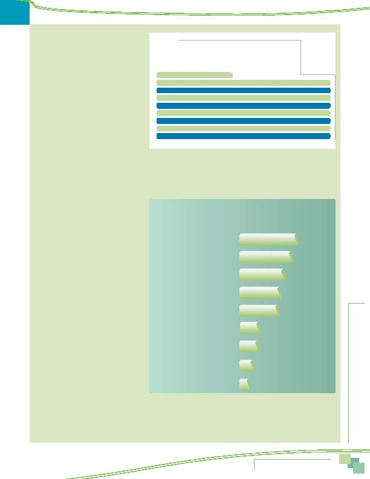

|

rideshare assistance or help finding a carpool/ vanpool partner grew from 44% in 2004 to 46% in 2007 to 60% in 2010. Awareness of the GRH program grew slightly between 2007 and 2010, from 23% to 26%, but it remained well below the 40% awareness observed in the 2004 SOC survey. contacted the program or visited a Commuter Connections or COG website in the past year and if so, what information or services they were seeking. Seven percent of respondents who knew of Commuter Connections had contacted the program, representing about five percent of all employed residents of the region. Table 14 lists the information respondents said they were seeking in this contact. information. About one in ten (12%) said they were looking for information about Guaranteed Ride Home. COMMUTER ASSISTANCE PROGRAMS commuter programs that delivered commute assistance services in the areas where they lived and/or worked. If they lived and worked in different jurisdictions, they were asked about both the organization in their home area and the organization in their work area. of the nine organizations, when prompted with the organizations' names. Awareness of these programs ranged from 10% to 53% of respon- dents who were asked the questions. Five of nine programs examined were known to at least a third of the target area respondents. were asked if they had contacted it. Figure 35 presents these results for the nine organizations, listed in Figure 34. Twenty-eight percent of respondents in the Loudoun County service area said they had contacted this organization, 21% of respondents who lived or worked in Arlington County said they contacted Arlington County Commuter Services, and 20% of respondents in Frederick and Prince William Counties contacted the commuter service organizations in their areas. All other local organizations had lower contact levels. Prince George's n = 894, Montgomery n = 928, Alexandria n = 732, Fairfax n = 1,253) finding carpool/vanpool partner Assistance Resources |